November ??th, 2021¶
Motivation: butter bandpass, correlation in frequency domain, usage of plotting functions
# HIDE CODE
import os
import sys
import nibabel as nib
import networkx as nx
from time import time
from pprint import pprint
from copy import deepcopy as dc
from os.path import join as pjoin
from myterial import orange, blue_grey
from IPython.display import display, IFrame, HTML
from matplotlib.colors import rgb2hex, to_rgb
import matplotlib.pyplot as plt
import seaborn as sns
# set style & no interpolalation
import matplotlib
matplotlib.rcParams['image.interpolation'] = 'none'
sns.set_style('whitegrid')
%matplotlib inline
# tmp & extras dir
git_dir = pjoin(os.environ['HOME'], 'Dropbox/git')
tmp_dir = pjoin(git_dir, 'jb-Ca-fMRI/tmp')
extras_dir = pjoin(git_dir, 'jb-Ca-fMRI/_extras')
lfr_dir = pjoin(os.environ['HOME'], 'Documents/workspaces/lfr/binary_overlapping')
# GitHub
sys.path.insert(0, pjoin(git_dir, '_Ca-fMRI'))
from register.atlas import make_tree_graph
from register.parcellation import Parcellation
from analysis.hierarchical import Hierarchical
from analysis.fourier import *
from analysis.bootstrap import *
from analysis.svinet import *
from analysis.group import *
from analysis.lfr import *
from utils.render import *
from utils.plotting import *
from model.mouse import Mice
from model.configuration import Config
# warnings
import warnings
warnings.filterwarnings('ignore', category=DeprecationWarning)
mice = Mice(Config(768, 4), full_load=True, load_allen=True, load_parcel=True)
ROI lookup not found, time to run organize_func() . . .
combine metadata not found, time to run cat_data() . . .
mice.cfg.exclude_runs
[ (10, 3, 1), (10, 3, 2), (10, 3, 3), (10, 3, 4), (10, 3, 5), (10, 3, 6), (10, 3, 7) ]
for key, anat in mice.mask3d.items():
print(key, anat.nii_file)
sub-SLC01_ses-1 sub-SLC01_ses-1_space-individual_desc-mask_bold.nii.gz
sub-SLC01_ses-2 sub-SLC01_ses-2_space-individual_desc-mask_bold.nii.gz
sub-SLC01_ses-3 sub-SLC01_ses-3_space-individual_desc-mask_bold.nii.gz
sub-SLC02_ses-1 sub-SLC02_ses-1_space-individual_desc-mask_bold.nii.gz
sub-SLC02_ses-2 sub-SLC02_ses-2_space-individual_desc-mask_bold.nii.gz
sub-SLC02_ses-3 sub-SLC02_ses-3_space-individual_desc-mask_bold.nii.gz
sub-SLC03_ses-1 sub-SLC03_ses-1_space-individual_desc-mask_bold.nii.gz
sub-SLC03_ses-2 sub-SLC03_ses-2_space-individual_desc-mask_bold.nii.gz
sub-SLC03_ses-3 sub-SLC03_ses-3_space-individual_desc-mask_bold.nii.gz
sub-SLC04_ses-1 sub-SLC04_ses-1_space-individual_desc-mask_bold.nii.gz
sub-SLC04_ses-2 sub-SLC04_ses-2_space-individual_desc-mask_bold.nii.gz
sub-SLC04_ses-3 sub-SLC04_ses-3_space-individual_desc-mask_bold.nii.gz
sub-SLC05_ses-1 sub-SLC05_ses-1_space-individual_desc-mask_bold.nii.gz
sub-SLC05_ses-2 sub-SLC05_ses-2_space-individual_desc-mask_bold.nii.gz
sub-SLC05_ses-3 sub-SLC05_ses-3_space-individual_desc-mask_bold.nii.gz
sub-SLC06_ses-1 sub-SLC06_ses-1_space-individual_desc-mask_bold.nii.gz
sub-SLC06_ses-2 sub-SLC06_ses-2_space-individual_desc-mask_bold.nii.gz
sub-SLC06_ses-3 sub-SLC06_ses-3_space-individual_desc-mask_bold.nii.gz
sub-SLC07_ses-1 sub-SLC07_ses-1_space-individual_desc-mask_bold.nii.gz
sub-SLC07_ses-2 sub-SLC07_ses-2_space-individual_desc-mask_bold.nii.gz
sub-SLC07_ses-3 sub-SLC07_ses-3_space-individual_desc-mask_bold.nii.gz
sub-SLC08_ses-1 sub-SLC08_ses-1_space-individual_desc-mask_bold.nii.gz
sub-SLC08_ses-2 sub-SLC08_ses-2_space-individual_desc-mask_bold.nii.gz
sub-SLC08_ses-3 sub-SLC08_ses-3_space-individual_desc-mask_bold.nii.gz
sub-SLC09_ses-1 sub-SLC09_ses-1_space-individual_desc-mask_bold.nii.gz
sub-SLC09_ses-2 sub-SLC09_ses-2_space-individual_desc-mask_bold.nii.gz
sub-SLC09_ses-3 sub-SLC09_ses-3_space-individual_desc-mask_bold.nii.gz
sub-SLC10_ses-1 sub-SLC10_ses-1_space-individual_desc-mask_bold.nii.gz
sub-SLC10_ses-2 sub-SLC10_ses-2_space-individual_desc-mask_bold.nii.gz
from register.register import Register
reg = Register(mice)
reg.set_mode('ca2')
_ = reg.get_accepted_regions()
Name: cortex . . . a total of: 996 regions accepted, 388 regions rejected. accept ratio: 71.97 %, reject ratio: 28.03 %, using a presence threshold of 10.0 %
reg.set_mode('bold')
_ = reg.get_accepted_regions()
Name: cortex . . . a total of: 4614 regions accepted, 16 regions rejected. accept ratio: 99.65 %, reject ratio: 0.35 %, using a presence threshold of 10.0 %
Name: subcortex-l . . . a total of: 154 regions accepted, 0 regions rejected. accept ratio: 100.00 %, reject ratio: 0.00 %, using a presence threshold of 10.0 %
Name: subcortex-r . . . a total of: 154 regions accepted, 0 regions rejected. accept ratio: 100.00 %, reject ratio: 0.00 %, using a presence threshold of 10.0 %
mice.setup_func_data()
mice.bold['sub-SLC01_ses-1_run-1'].shape
(4922, 550)
mice.ca['sub-SLC01_ses-1_run-1'].shape
(996, 5500)
for key, func in mice.ca.items():
nans = np.isnan(func[:]).sum(1)
nans = len(np.where(nans > 0)[0]) / len(nans)
print(f"key = {key}, proportion of nan ROIs: {nans:.2f}")
key = sub-SLC01_ses-1_run-1, proportion of nan ROIs: 0.20
key = sub-SLC01_ses-1_run-3, proportion of nan ROIs: 0.20
key = sub-SLC01_ses-1_run-5, proportion of nan ROIs: 0.20
key = sub-SLC01_ses-1_run-7, proportion of nan ROIs: 0.20
key = sub-SLC01_ses-2_run-1, proportion of nan ROIs: 0.17
key = sub-SLC01_ses-2_run-3, proportion of nan ROIs: 0.17
key = sub-SLC01_ses-2_run-5, proportion of nan ROIs: 0.17
key = sub-SLC01_ses-2_run-7, proportion of nan ROIs: 0.17
key = sub-SLC01_ses-3_run-1, proportion of nan ROIs: 0.21
key = sub-SLC01_ses-3_run-3, proportion of nan ROIs: 0.21
key = sub-SLC01_ses-3_run-5, proportion of nan ROIs: 0.21
key = sub-SLC01_ses-3_run-7, proportion of nan ROIs: 0.21
key = sub-SLC02_ses-1_run-1, proportion of nan ROIs: 0.23
key = sub-SLC02_ses-1_run-3, proportion of nan ROIs: 0.23
key = sub-SLC02_ses-1_run-5, proportion of nan ROIs: 0.23
key = sub-SLC02_ses-1_run-7, proportion of nan ROIs: 0.23
key = sub-SLC02_ses-2_run-1, proportion of nan ROIs: 0.27
key = sub-SLC02_ses-2_run-3, proportion of nan ROIs: 0.27
key = sub-SLC02_ses-2_run-5, proportion of nan ROIs: 0.27
key = sub-SLC02_ses-3_run-1, proportion of nan ROIs: 0.20
key = sub-SLC02_ses-3_run-3, proportion of nan ROIs: 0.20
key = sub-SLC02_ses-3_run-5, proportion of nan ROIs: 0.20
key = sub-SLC02_ses-3_run-7, proportion of nan ROIs: 0.20
key = sub-SLC03_ses-1_run-1, proportion of nan ROIs: 0.23
key = sub-SLC03_ses-1_run-2, proportion of nan ROIs: 0.23
key = sub-SLC03_ses-1_run-4, proportion of nan ROIs: 0.23
key = sub-SLC03_ses-1_run-6, proportion of nan ROIs: 0.23
key = sub-SLC03_ses-2_run-1, proportion of nan ROIs: 0.18
key = sub-SLC03_ses-2_run-3, proportion of nan ROIs: 0.18
key = sub-SLC03_ses-2_run-5, proportion of nan ROIs: 0.18
key = sub-SLC03_ses-2_run-7, proportion of nan ROIs: 0.18
key = sub-SLC03_ses-3_run-1, proportion of nan ROIs: 0.25
key = sub-SLC03_ses-3_run-3, proportion of nan ROIs: 0.25
key = sub-SLC03_ses-3_run-5, proportion of nan ROIs: 0.25
key = sub-SLC03_ses-3_run-7, proportion of nan ROIs: 0.25
key = sub-SLC04_ses-1_run-1, proportion of nan ROIs: 0.21
key = sub-SLC04_ses-1_run-3, proportion of nan ROIs: 0.21
key = sub-SLC04_ses-1_run-5, proportion of nan ROIs: 0.21
key = sub-SLC04_ses-1_run-7, proportion of nan ROIs: 0.21
key = sub-SLC04_ses-2_run-1, proportion of nan ROIs: 0.23
key = sub-SLC04_ses-2_run-3, proportion of nan ROIs: 0.23
key = sub-SLC04_ses-2_run-5, proportion of nan ROIs: 0.23
key = sub-SLC04_ses-2_run-7, proportion of nan ROIs: 0.23
key = sub-SLC04_ses-3_run-1, proportion of nan ROIs: 0.21
key = sub-SLC04_ses-3_run-3, proportion of nan ROIs: 0.21
key = sub-SLC04_ses-3_run-5, proportion of nan ROIs: 0.21
key = sub-SLC04_ses-3_run-7, proportion of nan ROIs: 0.21
key = sub-SLC05_ses-1_run-1, proportion of nan ROIs: 0.21
key = sub-SLC05_ses-1_run-3, proportion of nan ROIs: 0.21
key = sub-SLC05_ses-1_run-5, proportion of nan ROIs: 0.21
key = sub-SLC05_ses-1_run-7, proportion of nan ROIs: 0.21
key = sub-SLC05_ses-2_run-1, proportion of nan ROIs: 0.21
key = sub-SLC05_ses-2_run-3, proportion of nan ROIs: 0.21
key = sub-SLC05_ses-2_run-5, proportion of nan ROIs: 0.21
key = sub-SLC05_ses-2_run-7, proportion of nan ROIs: 0.21
key = sub-SLC05_ses-3_run-1, proportion of nan ROIs: 0.23
key = sub-SLC05_ses-3_run-3, proportion of nan ROIs: 0.23
key = sub-SLC05_ses-3_run-5, proportion of nan ROIs: 0.23
key = sub-SLC05_ses-3_run-7, proportion of nan ROIs: 0.23
key = sub-SLC06_ses-1_run-1, proportion of nan ROIs: 0.17
key = sub-SLC06_ses-1_run-3, proportion of nan ROIs: 0.17
key = sub-SLC06_ses-1_run-5, proportion of nan ROIs: 0.17
key = sub-SLC06_ses-1_run-7, proportion of nan ROIs: 0.17
key = sub-SLC06_ses-2_run-1, proportion of nan ROIs: 0.21
key = sub-SLC06_ses-2_run-3, proportion of nan ROIs: 0.21
key = sub-SLC06_ses-2_run-5, proportion of nan ROIs: 0.21
key = sub-SLC06_ses-2_run-7, proportion of nan ROIs: 0.21
key = sub-SLC06_ses-3_run-1, proportion of nan ROIs: 0.20
key = sub-SLC06_ses-3_run-3, proportion of nan ROIs: 0.20
key = sub-SLC06_ses-3_run-5, proportion of nan ROIs: 0.20
key = sub-SLC06_ses-3_run-7, proportion of nan ROIs: 0.20
key = sub-SLC07_ses-1_run-1, proportion of nan ROIs: 0.22
key = sub-SLC07_ses-1_run-3, proportion of nan ROIs: 0.22
key = sub-SLC07_ses-1_run-5, proportion of nan ROIs: 0.22
key = sub-SLC07_ses-1_run-7, proportion of nan ROIs: 0.22
key = sub-SLC07_ses-2_run-1, proportion of nan ROIs: 0.22
key = sub-SLC07_ses-2_run-3, proportion of nan ROIs: 0.22
key = sub-SLC07_ses-2_run-5, proportion of nan ROIs: 0.22
key = sub-SLC07_ses-2_run-7, proportion of nan ROIs: 0.22
key = sub-SLC07_ses-3_run-1, proportion of nan ROIs: 0.27
key = sub-SLC07_ses-3_run-3, proportion of nan ROIs: 0.27
key = sub-SLC07_ses-3_run-5, proportion of nan ROIs: 0.27
key = sub-SLC07_ses-3_run-7, proportion of nan ROIs: 0.27
key = sub-SLC08_ses-1_run-1, proportion of nan ROIs: 0.23
key = sub-SLC08_ses-1_run-3, proportion of nan ROIs: 0.23
key = sub-SLC08_ses-1_run-5, proportion of nan ROIs: 0.23
key = sub-SLC08_ses-2_run-1, proportion of nan ROIs: 0.23
key = sub-SLC08_ses-2_run-3, proportion of nan ROIs: 0.23
key = sub-SLC08_ses-2_run-5, proportion of nan ROIs: 0.23
key = sub-SLC08_ses-2_run-7, proportion of nan ROIs: 0.23
key = sub-SLC08_ses-3_run-1, proportion of nan ROIs: 0.26
key = sub-SLC08_ses-3_run-3, proportion of nan ROIs: 0.26
key = sub-SLC08_ses-3_run-5, proportion of nan ROIs: 0.26
key = sub-SLC08_ses-3_run-7, proportion of nan ROIs: 0.26
key = sub-SLC09_ses-1_run-1, proportion of nan ROIs: 0.28
key = sub-SLC09_ses-1_run-3, proportion of nan ROIs: 0.28
key = sub-SLC09_ses-1_run-5, proportion of nan ROIs: 0.28
key = sub-SLC09_ses-1_run-7, proportion of nan ROIs: 0.28
key = sub-SLC09_ses-2_run-1, proportion of nan ROIs: 0.27
key = sub-SLC09_ses-2_run-3, proportion of nan ROIs: 0.27
key = sub-SLC09_ses-2_run-5, proportion of nan ROIs: 0.27
key = sub-SLC09_ses-2_run-7, proportion of nan ROIs: 0.27
key = sub-SLC09_ses-3_run-1, proportion of nan ROIs: 0.25
key = sub-SLC09_ses-3_run-3, proportion of nan ROIs: 0.25
key = sub-SLC09_ses-3_run-5, proportion of nan ROIs: 0.25
key = sub-SLC09_ses-3_run-7, proportion of nan ROIs: 0.25
key = sub-SLC10_ses-1_run-1, proportion of nan ROIs: 0.21
key = sub-SLC10_ses-1_run-3, proportion of nan ROIs: 0.21
key = sub-SLC10_ses-1_run-5, proportion of nan ROIs: 0.21
key = sub-SLC10_ses-1_run-7, proportion of nan ROIs: 0.21
key = sub-SLC10_ses-2_run-1, proportion of nan ROIs: 0.21
key = sub-SLC10_ses-2_run-3, proportion of nan ROIs: 0.21
key = sub-SLC10_ses-2_run-5, proportion of nan ROIs: 0.21
key = sub-SLC10_ses-2_run-7, proportion of nan ROIs: 0.21
key = sub-SLC01_ses-1, proportion of nan ROIs: 0.20
key = sub-SLC01_ses-2, proportion of nan ROIs: 0.17
key = sub-SLC01_ses-3, proportion of nan ROIs: 0.21
key = sub-SLC02_ses-1, proportion of nan ROIs: 0.23
key = sub-SLC02_ses-2, proportion of nan ROIs: 0.27
key = sub-SLC02_ses-3, proportion of nan ROIs: 0.20
key = sub-SLC03_ses-1, proportion of nan ROIs: 0.23
key = sub-SLC03_ses-2, proportion of nan ROIs: 0.18
key = sub-SLC03_ses-3, proportion of nan ROIs: 0.25
key = sub-SLC04_ses-1, proportion of nan ROIs: 0.21
key = sub-SLC04_ses-2, proportion of nan ROIs: 0.23
key = sub-SLC04_ses-3, proportion of nan ROIs: 0.21
key = sub-SLC05_ses-1, proportion of nan ROIs: 0.21
key = sub-SLC05_ses-2, proportion of nan ROIs: 0.21
key = sub-SLC05_ses-3, proportion of nan ROIs: 0.23
key = sub-SLC06_ses-1, proportion of nan ROIs: 0.17
key = sub-SLC06_ses-2, proportion of nan ROIs: 0.21
key = sub-SLC06_ses-3, proportion of nan ROIs: 0.20
key = sub-SLC07_ses-1, proportion of nan ROIs: 0.22
key = sub-SLC07_ses-2, proportion of nan ROIs: 0.22
key = sub-SLC07_ses-3, proportion of nan ROIs: 0.27
key = sub-SLC08_ses-1, proportion of nan ROIs: 0.23
key = sub-SLC08_ses-2, proportion of nan ROIs: 0.23
key = sub-SLC08_ses-3, proportion of nan ROIs: 0.26
key = sub-SLC09_ses-1, proportion of nan ROIs: 0.28
key = sub-SLC09_ses-2, proportion of nan ROIs: 0.27
key = sub-SLC09_ses-3, proportion of nan ROIs: 0.25
key = sub-SLC10_ses-1, proportion of nan ROIs: 0.21
key = sub-SLC10_ses-2, proportion of nan ROIs: 0.21
key = sub-SLC01, proportion of nan ROIs: 0.32
key = sub-SLC02, proportion of nan ROIs: 0.39
key = sub-SLC03, proportion of nan ROIs: 0.35
key = sub-SLC04, proportion of nan ROIs: 0.34
key = sub-SLC05, proportion of nan ROIs: 0.33
key = sub-SLC06, proportion of nan ROIs: 0.32
key = sub-SLC07, proportion of nan ROIs: 0.41
key = sub-SLC08, proportion of nan ROIs: 0.38
key = sub-SLC09, proportion of nan ROIs: 0.37
key = sub-SLC10, proportion of nan ROIs: 0.28
key = sub-SLC, proportion of nan ROIs: 0.58
key = sub-SLC_ses-1, proportion of nan ROIs: 0.48
key = sub-SLC_ses-2, proportion of nan ROIs: 0.50
key = sub-SLC_ses-3, proportion of nan ROIs: 0.49
for key, func in mice.bold.items():
nans = np.isnan(func[:]).sum(1)
nans = len(np.where(nans > 0)[0]) / len(nans)
print(f"key = {key}, proportion of nan ROIs: {nans:.2f}")
key = sub-SLC01_ses-1_run-1, proportion of nan ROIs: 0.07
key = sub-SLC01_ses-1_run-3, proportion of nan ROIs: 0.07
key = sub-SLC01_ses-1_run-5, proportion of nan ROIs: 0.07
key = sub-SLC01_ses-1_run-7, proportion of nan ROIs: 0.07
key = sub-SLC01_ses-2_run-1, proportion of nan ROIs: 0.07
key = sub-SLC01_ses-2_run-3, proportion of nan ROIs: 0.07
key = sub-SLC01_ses-2_run-5, proportion of nan ROIs: 0.07
key = sub-SLC01_ses-2_run-7, proportion of nan ROIs: 0.07
key = sub-SLC01_ses-3_run-1, proportion of nan ROIs: 0.06
key = sub-SLC01_ses-3_run-3, proportion of nan ROIs: 0.06
key = sub-SLC01_ses-3_run-5, proportion of nan ROIs: 0.06
key = sub-SLC01_ses-3_run-7, proportion of nan ROIs: 0.06
key = sub-SLC02_ses-1_run-1, proportion of nan ROIs: 0.07
key = sub-SLC02_ses-1_run-3, proportion of nan ROIs: 0.07
key = sub-SLC02_ses-1_run-5, proportion of nan ROIs: 0.07
key = sub-SLC02_ses-1_run-7, proportion of nan ROIs: 0.07
key = sub-SLC02_ses-2_run-1, proportion of nan ROIs: 0.07
key = sub-SLC02_ses-2_run-3, proportion of nan ROIs: 0.07
key = sub-SLC02_ses-2_run-5, proportion of nan ROIs: 0.07
key = sub-SLC02_ses-3_run-1, proportion of nan ROIs: 0.07
key = sub-SLC02_ses-3_run-3, proportion of nan ROIs: 0.07
key = sub-SLC02_ses-3_run-5, proportion of nan ROIs: 0.07
key = sub-SLC02_ses-3_run-7, proportion of nan ROIs: 0.07
key = sub-SLC03_ses-1_run-2, proportion of nan ROIs: 0.06
key = sub-SLC03_ses-1_run-4, proportion of nan ROIs: 0.06
key = sub-SLC03_ses-1_run-6, proportion of nan ROIs: 0.06
key = sub-SLC03_ses-2_run-1, proportion of nan ROIs: 0.08
key = sub-SLC03_ses-2_run-3, proportion of nan ROIs: 0.08
key = sub-SLC03_ses-2_run-5, proportion of nan ROIs: 0.08
key = sub-SLC03_ses-2_run-7, proportion of nan ROIs: 0.08
key = sub-SLC03_ses-3_run-1, proportion of nan ROIs: 0.07
key = sub-SLC03_ses-3_run-3, proportion of nan ROIs: 0.07
key = sub-SLC03_ses-3_run-5, proportion of nan ROIs: 0.07
key = sub-SLC03_ses-3_run-7, proportion of nan ROIs: 0.07
key = sub-SLC04_ses-1_run-1, proportion of nan ROIs: 0.07
key = sub-SLC04_ses-1_run-3, proportion of nan ROIs: 0.07
key = sub-SLC04_ses-1_run-5, proportion of nan ROIs: 0.07
key = sub-SLC04_ses-1_run-7, proportion of nan ROIs: 0.07
key = sub-SLC04_ses-2_run-1, proportion of nan ROIs: 0.06
key = sub-SLC04_ses-2_run-3, proportion of nan ROIs: 0.06
key = sub-SLC04_ses-2_run-5, proportion of nan ROIs: 0.06
key = sub-SLC04_ses-2_run-7, proportion of nan ROIs: 0.06
key = sub-SLC04_ses-3_run-1, proportion of nan ROIs: 0.06
key = sub-SLC04_ses-3_run-3, proportion of nan ROIs: 0.06
key = sub-SLC04_ses-3_run-5, proportion of nan ROIs: 0.06
key = sub-SLC04_ses-3_run-7, proportion of nan ROIs: 0.06
key = sub-SLC05_ses-1_run-1, proportion of nan ROIs: 0.08
key = sub-SLC05_ses-1_run-3, proportion of nan ROIs: 0.08
key = sub-SLC05_ses-1_run-7, proportion of nan ROIs: 0.08
key = sub-SLC05_ses-2_run-1, proportion of nan ROIs: 0.06
key = sub-SLC05_ses-2_run-3, proportion of nan ROIs: 0.06
key = sub-SLC05_ses-2_run-5, proportion of nan ROIs: 0.06
key = sub-SLC05_ses-2_run-7, proportion of nan ROIs: 0.06
key = sub-SLC05_ses-3_run-1, proportion of nan ROIs: 0.06
key = sub-SLC05_ses-3_run-3, proportion of nan ROIs: 0.06
key = sub-SLC05_ses-3_run-5, proportion of nan ROIs: 0.06
key = sub-SLC05_ses-3_run-7, proportion of nan ROIs: 0.06
key = sub-SLC06_ses-1_run-1, proportion of nan ROIs: 0.07
key = sub-SLC06_ses-1_run-3, proportion of nan ROIs: 0.07
key = sub-SLC06_ses-1_run-5, proportion of nan ROIs: 0.07
key = sub-SLC06_ses-1_run-7, proportion of nan ROIs: 0.07
key = sub-SLC06_ses-2_run-1, proportion of nan ROIs: 0.07
key = sub-SLC06_ses-2_run-3, proportion of nan ROIs: 0.07
key = sub-SLC06_ses-2_run-5, proportion of nan ROIs: 0.07
key = sub-SLC06_ses-2_run-7, proportion of nan ROIs: 0.07
key = sub-SLC06_ses-3_run-1, proportion of nan ROIs: 0.07
key = sub-SLC06_ses-3_run-3, proportion of nan ROIs: 0.07
key = sub-SLC06_ses-3_run-5, proportion of nan ROIs: 0.07
key = sub-SLC06_ses-3_run-7, proportion of nan ROIs: 0.07
key = sub-SLC07_ses-1_run-1, proportion of nan ROIs: 0.07
key = sub-SLC07_ses-1_run-3, proportion of nan ROIs: 0.07
key = sub-SLC07_ses-1_run-5, proportion of nan ROIs: 0.07
key = sub-SLC07_ses-1_run-7, proportion of nan ROIs: 0.07
key = sub-SLC07_ses-2_run-1, proportion of nan ROIs: 0.06
key = sub-SLC07_ses-2_run-3, proportion of nan ROIs: 0.06
key = sub-SLC07_ses-2_run-5, proportion of nan ROIs: 0.06
key = sub-SLC07_ses-2_run-7, proportion of nan ROIs: 0.06
key = sub-SLC07_ses-3_run-1, proportion of nan ROIs: 0.06
key = sub-SLC07_ses-3_run-3, proportion of nan ROIs: 0.06
key = sub-SLC07_ses-3_run-5, proportion of nan ROIs: 0.06
key = sub-SLC07_ses-3_run-7, proportion of nan ROIs: 0.06
key = sub-SLC08_ses-1_run-1, proportion of nan ROIs: 1.00
key = sub-SLC08_ses-1_run-3, proportion of nan ROIs: 0.07
key = sub-SLC08_ses-1_run-5, proportion of nan ROIs: 0.07
key = sub-SLC08_ses-2_run-1, proportion of nan ROIs: 0.06
key = sub-SLC08_ses-2_run-3, proportion of nan ROIs: 0.06
key = sub-SLC08_ses-2_run-5, proportion of nan ROIs: 0.06
key = sub-SLC08_ses-2_run-7, proportion of nan ROIs: 0.06
key = sub-SLC08_ses-3_run-1, proportion of nan ROIs: 0.06
key = sub-SLC08_ses-3_run-3, proportion of nan ROIs: 0.06
key = sub-SLC08_ses-3_run-5, proportion of nan ROIs: 0.06
key = sub-SLC08_ses-3_run-7, proportion of nan ROIs: 0.06
key = sub-SLC09_ses-1_run-1, proportion of nan ROIs: 0.05
key = sub-SLC09_ses-1_run-3, proportion of nan ROIs: 0.05
key = sub-SLC09_ses-1_run-5, proportion of nan ROIs: 0.05
key = sub-SLC09_ses-1_run-7, proportion of nan ROIs: 0.05
key = sub-SLC09_ses-2_run-1, proportion of nan ROIs: 0.06
key = sub-SLC09_ses-2_run-3, proportion of nan ROIs: 0.06
key = sub-SLC09_ses-2_run-5, proportion of nan ROIs: 0.06
key = sub-SLC09_ses-2_run-7, proportion of nan ROIs: 0.06
key = sub-SLC09_ses-3_run-1, proportion of nan ROIs: 0.05
key = sub-SLC09_ses-3_run-3, proportion of nan ROIs: 0.05
key = sub-SLC09_ses-3_run-5, proportion of nan ROIs: 0.05
key = sub-SLC09_ses-3_run-7, proportion of nan ROIs: 0.05
key = sub-SLC10_ses-1_run-1, proportion of nan ROIs: 0.05
key = sub-SLC10_ses-1_run-3, proportion of nan ROIs: 0.05
key = sub-SLC10_ses-1_run-5, proportion of nan ROIs: 0.05
key = sub-SLC10_ses-1_run-7, proportion of nan ROIs: 0.05
key = sub-SLC10_ses-2_run-1, proportion of nan ROIs: 1.00
key = sub-SLC10_ses-2_run-3, proportion of nan ROIs: 0.06
key = sub-SLC10_ses-2_run-5, proportion of nan ROIs: 0.06
key = sub-SLC10_ses-2_run-7, proportion of nan ROIs: 0.06
key = sub-SLC01_ses-1, proportion of nan ROIs: 0.07
key = sub-SLC01_ses-2, proportion of nan ROIs: 0.07
key = sub-SLC01_ses-3, proportion of nan ROIs: 0.06
key = sub-SLC02_ses-1, proportion of nan ROIs: 0.07
key = sub-SLC02_ses-2, proportion of nan ROIs: 0.07
key = sub-SLC02_ses-3, proportion of nan ROIs: 0.07
key = sub-SLC03_ses-1, proportion of nan ROIs: 0.06
key = sub-SLC03_ses-2, proportion of nan ROIs: 0.08
key = sub-SLC03_ses-3, proportion of nan ROIs: 0.07
key = sub-SLC04_ses-1, proportion of nan ROIs: 0.07
key = sub-SLC04_ses-2, proportion of nan ROIs: 0.06
key = sub-SLC04_ses-3, proportion of nan ROIs: 0.06
key = sub-SLC05_ses-1, proportion of nan ROIs: 0.08
key = sub-SLC05_ses-2, proportion of nan ROIs: 0.06
key = sub-SLC05_ses-3, proportion of nan ROIs: 0.06
key = sub-SLC06_ses-1, proportion of nan ROIs: 0.07
key = sub-SLC06_ses-2, proportion of nan ROIs: 0.07
key = sub-SLC06_ses-3, proportion of nan ROIs: 0.07
key = sub-SLC07_ses-1, proportion of nan ROIs: 0.07
key = sub-SLC07_ses-2, proportion of nan ROIs: 0.06
key = sub-SLC07_ses-3, proportion of nan ROIs: 0.06
key = sub-SLC08_ses-1, proportion of nan ROIs: 0.07
key = sub-SLC08_ses-2, proportion of nan ROIs: 0.06
key = sub-SLC08_ses-3, proportion of nan ROIs: 0.06
key = sub-SLC09_ses-1, proportion of nan ROIs: 0.05
key = sub-SLC09_ses-2, proportion of nan ROIs: 0.06
key = sub-SLC09_ses-3, proportion of nan ROIs: 0.05
key = sub-SLC10_ses-1, proportion of nan ROIs: 0.05
key = sub-SLC10_ses-2, proportion of nan ROIs: 0.06
key = sub-SLC01, proportion of nan ROIs: 0.15
key = sub-SLC02, proportion of nan ROIs: 0.16
key = sub-SLC03, proportion of nan ROIs: 0.16
key = sub-SLC04, proportion of nan ROIs: 0.14
key = sub-SLC05, proportion of nan ROIs: 0.15
key = sub-SLC06, proportion of nan ROIs: 0.15
key = sub-SLC07, proportion of nan ROIs: 0.14
key = sub-SLC08, proportion of nan ROIs: 0.14
key = sub-SLC09, proportion of nan ROIs: 0.12
key = sub-SLC10, proportion of nan ROIs: 0.10
key = sub-SLC, proportion of nan ROIs: 0.42
key = sub-SLC_ses-1, proportion of nan ROIs: 0.29
key = sub-SLC_ses-2, proportion of nan ROIs: 0.29
key = sub-SLC_ses-3, proportion of nan ROIs: 0.26
func = mice.bold['sub-SLC']
func.shape
(4922, 60500)
nans = np.isnan(func[:])
plt.figure(figsize=(13, 30))
plt.imshow(nans, aspect=10)
plt.grid()
plt.show()
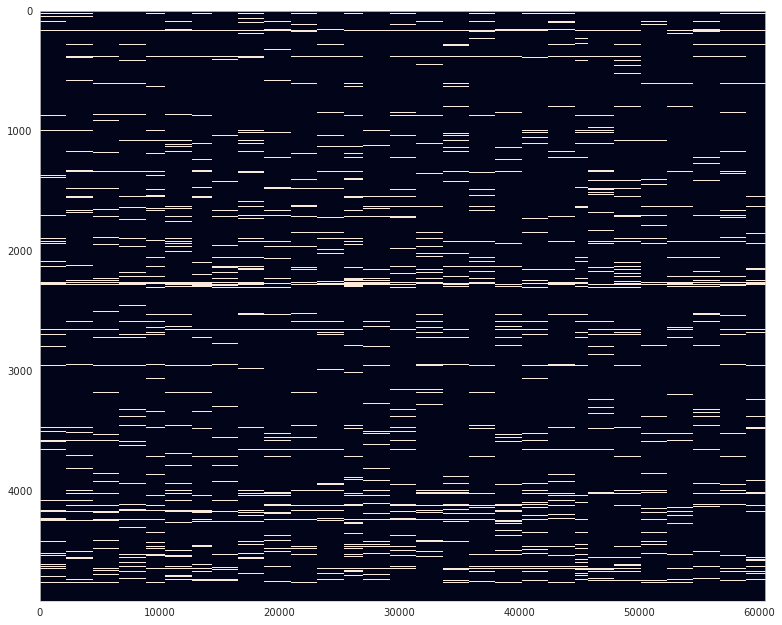
mice.setup_preproc_data()
mice.setup_anat_data()
bad = collections.defaultdict(list)
for key, func in tqdm(mice.bold_preproc.items()):
m = mice.T1w['_'.join((key.split('_')[:2]))].load_ants()
m = np.where(m.numpy())
if func.shape is None:
bad['missing'].append(key)
continue
nans = np.isnan(func[m]).sum(1)
nans = len(np.where(nans > 0)[0]) / len(nans)
print(f"key = {key}, proportion of nan ROIs: {nans:.2f}")
if nans > 0.2:
bad['NaN'].append(key)
key = sub-SLC01_ses-1_run-1, proportion of nan ROIs: 0.00
key = sub-SLC01_ses-1_run-2, proportion of nan ROIs: 0.00
key = sub-SLC01_ses-1_run-3, proportion of nan ROIs: 0.00
key = sub-SLC01_ses-1_run-4, proportion of nan ROIs: 0.00
key = sub-SLC01_ses-1_run-5, proportion of nan ROIs: 0.00
key = sub-SLC01_ses-1_run-6, proportion of nan ROIs: 0.00
key = sub-SLC01_ses-1_run-7, proportion of nan ROIs: 0.00
key = sub-SLC01_ses-2_run-1, proportion of nan ROIs: 0.00
key = sub-SLC01_ses-2_run-2, proportion of nan ROIs: 0.00
key = sub-SLC01_ses-2_run-3, proportion of nan ROIs: 0.00
key = sub-SLC01_ses-2_run-4, proportion of nan ROIs: 0.00
key = sub-SLC01_ses-2_run-5, proportion of nan ROIs: 0.00
key = sub-SLC01_ses-2_run-6, proportion of nan ROIs: 0.00
key = sub-SLC01_ses-2_run-7, proportion of nan ROIs: 0.00
key = sub-SLC01_ses-3_run-1, proportion of nan ROIs: 0.00
key = sub-SLC01_ses-3_run-2, proportion of nan ROIs: 0.00
key = sub-SLC01_ses-3_run-3, proportion of nan ROIs: 0.00
key = sub-SLC01_ses-3_run-4, proportion of nan ROIs: 0.00
key = sub-SLC01_ses-3_run-5, proportion of nan ROIs: 0.00
key = sub-SLC01_ses-3_run-6, proportion of nan ROIs: 0.00
key = sub-SLC01_ses-3_run-7, proportion of nan ROIs: 0.00
key = sub-SLC02_ses-1_run-1, proportion of nan ROIs: 0.00
key = sub-SLC02_ses-1_run-2, proportion of nan ROIs: 0.00
key = sub-SLC02_ses-1_run-3, proportion of nan ROIs: 0.00
key = sub-SLC02_ses-1_run-4, proportion of nan ROIs: 0.00
key = sub-SLC02_ses-1_run-5, proportion of nan ROIs: 0.00
key = sub-SLC02_ses-1_run-6, proportion of nan ROIs: 0.00
key = sub-SLC02_ses-1_run-7, proportion of nan ROIs: 0.00
key = sub-SLC02_ses-2_run-1, proportion of nan ROIs: 0.00
key = sub-SLC02_ses-2_run-2, proportion of nan ROIs: 0.00
key = sub-SLC02_ses-2_run-3, proportion of nan ROIs: 0.00
key = sub-SLC02_ses-2_run-4, proportion of nan ROIs: 0.00
key = sub-SLC02_ses-2_run-5, proportion of nan ROIs: 0.00
key = sub-SLC02_ses-2_run-6, proportion of nan ROIs: 0.00
key = sub-SLC02_ses-2_run-7, proportion of nan ROIs: 0.00
key = sub-SLC02_ses-3_run-1, proportion of nan ROIs: 0.00
key = sub-SLC02_ses-3_run-2, proportion of nan ROIs: 0.00
key = sub-SLC02_ses-3_run-3, proportion of nan ROIs: 0.00
key = sub-SLC02_ses-3_run-4, proportion of nan ROIs: 0.00
key = sub-SLC02_ses-3_run-5, proportion of nan ROIs: 0.00
key = sub-SLC02_ses-3_run-6, proportion of nan ROIs: 0.00
key = sub-SLC02_ses-3_run-7, proportion of nan ROIs: 0.00
key = sub-SLC03_ses-1_run-2, proportion of nan ROIs: 0.00
key = sub-SLC03_ses-1_run-3, proportion of nan ROIs: 0.00
key = sub-SLC03_ses-1_run-4, proportion of nan ROIs: 0.00
key = sub-SLC03_ses-1_run-5, proportion of nan ROIs: 0.00
key = sub-SLC03_ses-1_run-6, proportion of nan ROIs: 0.00
key = sub-SLC03_ses-1_run-7, proportion of nan ROIs: 0.00
key = sub-SLC03_ses-2_run-1, proportion of nan ROIs: 0.00
key = sub-SLC03_ses-2_run-2, proportion of nan ROIs: 0.00
key = sub-SLC03_ses-2_run-3, proportion of nan ROIs: 0.00
key = sub-SLC03_ses-2_run-4, proportion of nan ROIs: 0.00
key = sub-SLC03_ses-2_run-5, proportion of nan ROIs: 0.00
key = sub-SLC03_ses-2_run-6, proportion of nan ROIs: 0.00
key = sub-SLC03_ses-2_run-7, proportion of nan ROIs: 0.00
key = sub-SLC03_ses-3_run-1, proportion of nan ROIs: 0.00
key = sub-SLC03_ses-3_run-2, proportion of nan ROIs: 0.00
key = sub-SLC03_ses-3_run-3, proportion of nan ROIs: 0.00
key = sub-SLC03_ses-3_run-4, proportion of nan ROIs: 0.00
key = sub-SLC03_ses-3_run-5, proportion of nan ROIs: 0.00
key = sub-SLC03_ses-3_run-6, proportion of nan ROIs: 0.00
key = sub-SLC03_ses-3_run-7, proportion of nan ROIs: 0.00
key = sub-SLC04_ses-1_run-1, proportion of nan ROIs: 0.00
key = sub-SLC04_ses-1_run-2, proportion of nan ROIs: 0.00
key = sub-SLC04_ses-1_run-3, proportion of nan ROIs: 0.00
key = sub-SLC04_ses-1_run-4, proportion of nan ROIs: 0.00
key = sub-SLC04_ses-1_run-5, proportion of nan ROIs: 0.00
key = sub-SLC04_ses-1_run-6, proportion of nan ROIs: 0.00
key = sub-SLC04_ses-1_run-7, proportion of nan ROIs: 0.00
key = sub-SLC04_ses-2_run-1, proportion of nan ROIs: 0.00
key = sub-SLC04_ses-2_run-2, proportion of nan ROIs: 0.00
key = sub-SLC04_ses-2_run-3, proportion of nan ROIs: 0.00
key = sub-SLC04_ses-2_run-4, proportion of nan ROIs: 0.00
key = sub-SLC04_ses-2_run-5, proportion of nan ROIs: 0.00
key = sub-SLC04_ses-2_run-6, proportion of nan ROIs: 0.00
key = sub-SLC04_ses-2_run-7, proportion of nan ROIs: 0.00
key = sub-SLC04_ses-3_run-1, proportion of nan ROIs: 0.00
key = sub-SLC04_ses-3_run-2, proportion of nan ROIs: 0.00
key = sub-SLC04_ses-3_run-3, proportion of nan ROIs: 0.00
key = sub-SLC04_ses-3_run-4, proportion of nan ROIs: 0.00
key = sub-SLC04_ses-3_run-5, proportion of nan ROIs: 0.00
key = sub-SLC04_ses-3_run-6, proportion of nan ROIs: 0.00
key = sub-SLC04_ses-3_run-7, proportion of nan ROIs: 0.00
key = sub-SLC05_ses-1_run-1, proportion of nan ROIs: 0.00
key = sub-SLC05_ses-1_run-2, proportion of nan ROIs: 0.00
key = sub-SLC05_ses-1_run-3, proportion of nan ROIs: 0.00
key = sub-SLC05_ses-1_run-4, proportion of nan ROIs: 0.00
key = sub-SLC05_ses-1_run-6, proportion of nan ROIs: 0.00
key = sub-SLC05_ses-1_run-7, proportion of nan ROIs: 0.00
key = sub-SLC05_ses-2_run-1, proportion of nan ROIs: 0.00
key = sub-SLC05_ses-2_run-2, proportion of nan ROIs: 0.00
key = sub-SLC05_ses-2_run-3, proportion of nan ROIs: 0.00
key = sub-SLC05_ses-2_run-4, proportion of nan ROIs: 0.00
key = sub-SLC05_ses-2_run-5, proportion of nan ROIs: 0.00
key = sub-SLC05_ses-2_run-6, proportion of nan ROIs: 0.00
key = sub-SLC05_ses-2_run-7, proportion of nan ROIs: 0.00
key = sub-SLC05_ses-3_run-1, proportion of nan ROIs: 0.00
key = sub-SLC05_ses-3_run-2, proportion of nan ROIs: 0.00
key = sub-SLC05_ses-3_run-3, proportion of nan ROIs: 0.00
key = sub-SLC05_ses-3_run-4, proportion of nan ROIs: 0.00
key = sub-SLC05_ses-3_run-5, proportion of nan ROIs: 0.00
key = sub-SLC05_ses-3_run-6, proportion of nan ROIs: 0.00
key = sub-SLC05_ses-3_run-7, proportion of nan ROIs: 0.00
key = sub-SLC06_ses-1_run-1, proportion of nan ROIs: 0.00
key = sub-SLC06_ses-1_run-2, proportion of nan ROIs: 0.00
key = sub-SLC06_ses-1_run-3, proportion of nan ROIs: 0.00
key = sub-SLC06_ses-1_run-4, proportion of nan ROIs: 0.00
key = sub-SLC06_ses-1_run-5, proportion of nan ROIs: 0.00
key = sub-SLC06_ses-1_run-6, proportion of nan ROIs: 0.00
key = sub-SLC06_ses-1_run-7, proportion of nan ROIs: 0.00
key = sub-SLC06_ses-2_run-1, proportion of nan ROIs: 0.00
key = sub-SLC06_ses-2_run-2, proportion of nan ROIs: 0.00
key = sub-SLC06_ses-2_run-3, proportion of nan ROIs: 0.00
key = sub-SLC06_ses-2_run-4, proportion of nan ROIs: 0.00
key = sub-SLC06_ses-2_run-5, proportion of nan ROIs: 0.00
key = sub-SLC06_ses-2_run-6, proportion of nan ROIs: 0.00
key = sub-SLC06_ses-2_run-7, proportion of nan ROIs: 0.00
key = sub-SLC06_ses-3_run-1, proportion of nan ROIs: 0.00
key = sub-SLC06_ses-3_run-3, proportion of nan ROIs: 0.00
key = sub-SLC06_ses-3_run-4, proportion of nan ROIs: 0.00
key = sub-SLC06_ses-3_run-5, proportion of nan ROIs: 0.00
key = sub-SLC06_ses-3_run-6, proportion of nan ROIs: 0.00
key = sub-SLC06_ses-3_run-7, proportion of nan ROIs: 0.00
key = sub-SLC07_ses-1_run-1, proportion of nan ROIs: 0.00
key = sub-SLC07_ses-1_run-2, proportion of nan ROIs: 0.00
key = sub-SLC07_ses-1_run-3, proportion of nan ROIs: 0.00
key = sub-SLC07_ses-1_run-4, proportion of nan ROIs: 0.00
key = sub-SLC07_ses-1_run-5, proportion of nan ROIs: 0.00
key = sub-SLC07_ses-1_run-6, proportion of nan ROIs: 0.00
key = sub-SLC07_ses-1_run-7, proportion of nan ROIs: 0.00
key = sub-SLC07_ses-2_run-1, proportion of nan ROIs: 0.00
key = sub-SLC07_ses-2_run-2, proportion of nan ROIs: 0.00
key = sub-SLC07_ses-2_run-3, proportion of nan ROIs: 0.00
key = sub-SLC07_ses-2_run-4, proportion of nan ROIs: 0.00
key = sub-SLC07_ses-2_run-5, proportion of nan ROIs: 0.00
key = sub-SLC07_ses-2_run-6, proportion of nan ROIs: 0.00
key = sub-SLC07_ses-2_run-7, proportion of nan ROIs: 0.00
key = sub-SLC07_ses-3_run-1, proportion of nan ROIs: 0.00
key = sub-SLC07_ses-3_run-2, proportion of nan ROIs: 0.00
key = sub-SLC07_ses-3_run-3, proportion of nan ROIs: 0.00
key = sub-SLC07_ses-3_run-4, proportion of nan ROIs: 0.00
key = sub-SLC07_ses-3_run-5, proportion of nan ROIs: 0.00
key = sub-SLC07_ses-3_run-6, proportion of nan ROIs: 0.00
key = sub-SLC07_ses-3_run-7, proportion of nan ROIs: 0.00
key = sub-SLC08_ses-1_run-1, proportion of nan ROIs: 1.00
key = sub-SLC08_ses-1_run-2, proportion of nan ROIs: 0.00
key = sub-SLC08_ses-1_run-3, proportion of nan ROIs: 0.00
key = sub-SLC08_ses-1_run-4, proportion of nan ROIs: 0.00
key = sub-SLC08_ses-1_run-5, proportion of nan ROIs: 0.00
key = sub-SLC08_ses-1_run-6, proportion of nan ROIs: 0.00
key = sub-SLC08_ses-2_run-1, proportion of nan ROIs: 0.00
key = sub-SLC08_ses-2_run-2, proportion of nan ROIs: 0.00
key = sub-SLC08_ses-2_run-3, proportion of nan ROIs: 0.00
key = sub-SLC08_ses-2_run-4, proportion of nan ROIs: 0.00
key = sub-SLC08_ses-2_run-5, proportion of nan ROIs: 0.00
key = sub-SLC08_ses-2_run-6, proportion of nan ROIs: 0.00
key = sub-SLC08_ses-2_run-7, proportion of nan ROIs: 0.00
key = sub-SLC08_ses-3_run-1, proportion of nan ROIs: 0.00
key = sub-SLC08_ses-3_run-2, proportion of nan ROIs: 0.00
key = sub-SLC08_ses-3_run-3, proportion of nan ROIs: 0.00
key = sub-SLC08_ses-3_run-4, proportion of nan ROIs: 0.00
key = sub-SLC08_ses-3_run-5, proportion of nan ROIs: 0.00
key = sub-SLC08_ses-3_run-6, proportion of nan ROIs: 0.00
key = sub-SLC08_ses-3_run-7, proportion of nan ROIs: 0.00
key = sub-SLC09_ses-1_run-1, proportion of nan ROIs: 0.00
key = sub-SLC09_ses-1_run-2, proportion of nan ROIs: 0.00
key = sub-SLC09_ses-1_run-3, proportion of nan ROIs: 0.00
key = sub-SLC09_ses-1_run-4, proportion of nan ROIs: 0.00
key = sub-SLC09_ses-1_run-5, proportion of nan ROIs: 0.00
key = sub-SLC09_ses-1_run-6, proportion of nan ROIs: 0.00
key = sub-SLC09_ses-1_run-7, proportion of nan ROIs: 0.00
key = sub-SLC09_ses-2_run-1, proportion of nan ROIs: 0.00
key = sub-SLC09_ses-2_run-2, proportion of nan ROIs: 0.00
key = sub-SLC09_ses-2_run-3, proportion of nan ROIs: 0.00
key = sub-SLC09_ses-2_run-4, proportion of nan ROIs: 0.00
key = sub-SLC09_ses-2_run-5, proportion of nan ROIs: 0.00
key = sub-SLC09_ses-2_run-6, proportion of nan ROIs: 0.00
key = sub-SLC09_ses-2_run-7, proportion of nan ROIs: 0.00
key = sub-SLC09_ses-3_run-1, proportion of nan ROIs: 0.00
key = sub-SLC09_ses-3_run-2, proportion of nan ROIs: 0.00
key = sub-SLC09_ses-3_run-3, proportion of nan ROIs: 0.00
key = sub-SLC09_ses-3_run-4, proportion of nan ROIs: 0.00
key = sub-SLC09_ses-3_run-5, proportion of nan ROIs: 0.00
key = sub-SLC09_ses-3_run-6, proportion of nan ROIs: 0.00
key = sub-SLC09_ses-3_run-7, proportion of nan ROIs: 0.00
key = sub-SLC10_ses-1_run-1, proportion of nan ROIs: 0.00
key = sub-SLC10_ses-1_run-2, proportion of nan ROIs: 0.00
key = sub-SLC10_ses-1_run-3, proportion of nan ROIs: 0.00
key = sub-SLC10_ses-1_run-4, proportion of nan ROIs: 0.00
key = sub-SLC10_ses-1_run-5, proportion of nan ROIs: 0.00
key = sub-SLC10_ses-1_run-6, proportion of nan ROIs: 0.00
key = sub-SLC10_ses-1_run-7, proportion of nan ROIs: 0.00
key = sub-SLC10_ses-2_run-1, proportion of nan ROIs: 1.00
key = sub-SLC10_ses-2_run-2, proportion of nan ROIs: 0.00
key = sub-SLC10_ses-2_run-3, proportion of nan ROIs: 0.00
key = sub-SLC10_ses-2_run-4, proportion of nan ROIs: 0.00
key = sub-SLC10_ses-2_run-5, proportion of nan ROIs: 0.00
key = sub-SLC10_ses-2_run-6, proportion of nan ROIs: 0.00
key = sub-SLC10_ses-2_run-7, proportion of nan ROIs: 0.00
key = sub-SLC10_ses-3_run-1, proportion of nan ROIs: 0.00
key = sub-SLC10_ses-3_run-2, proportion of nan ROIs: 0.00
key = sub-SLC10_ses-3_run-3, proportion of nan ROIs: 0.00
key = sub-SLC10_ses-3_run-4, proportion of nan ROIs: 0.00
key = sub-SLC10_ses-3_run-5, proportion of nan ROIs: 0.00
key = sub-SLC10_ses-3_run-6, proportion of nan ROIs: 0.00
key = sub-SLC10_ses-3_run-7, proportion of nan ROIs: 0.00
bad
defaultdict(<class 'list'>, { 'missing': [ 'sub-SLC03_ses-1_run-1', 'sub-SLC05_ses-1_run-5', 'sub-SLC06_ses-3_run-2', 'sub-SLC08_ses-1_run-7' ], 'NaN': ['sub-SLC08_ses-1_run-1', 'sub-SLC10_ses-2_run-1'] })
N = 600
fs = 10
delta_t = 1 / fs
t_idxs = np.arange(N * fs)
time = t_idxs * delta_t
freqs = sp_fft.rfftfreq(len(t_idxs), 1/fs)
fs, delta_t
(10, 0.1)
frequencies = [2.5, 0.5, 0.2, 0.1]
omegas = [2 * np.pi * f for f in frequencies]
coefs_1 = [0.8, 0.3, 0.1, -0.2]
coefs_2 = [0.8, 0.4, 0.6, 0.1]
x1 = sum(c * np.cos(w * time) for c, w in zip(coefs_1, omegas))
x2 = sum(c * np.cos(w * time) for c, w in zip(coefs_2, omegas))
print(x1.var(), x2.var())
x1 = sp_stats.zscore(x1)
x2 = sp_stats.zscore(x2)
x = np.concatenate([
np.expand_dims(x1, 0),
np.expand_dims(x2, 0),
])
rng = get_rng()
x1_noise = x1 + rng.normal(0, 2.0, len(time))
x2_noise = x2 + rng.normal(0, 0.5, len(time))
x_noise = np.concatenate([
np.expand_dims(x1_noise, 0),
np.expand_dims(x2_noise, 0),
])
0.38999999999999513 0.584999999999993
fig, axes = create_figure(1, 2, (8., 3.))
intvl = range(0, 81)
for i, ax in enumerate(axes.flat):
if i == 0:
_x = t_idxs[intvl]
lbl = 'time index'
else:
_x = time[intvl]
lbl = 'time [s]'
ax.plot(_x, x_noise[0, intvl])
ax.plot(_x, x_noise[1, intvl])
ax.set_xlabel(lbl)
ax.grid()
plt.show()
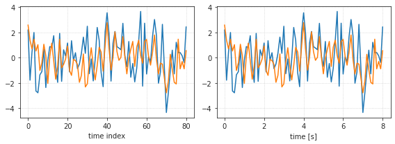
results = bandpass_corr(x, [(0.01, 1.0), (2.0, 4.0)], fs)
list(results)
['y', 'freqs', 'bands', 'band_freqs', 'corrs']
results['corrs']
array([[[1. , 0.58737848], [0.58737848, 1. ]], [[1. , 1. ], [1. , 1. ]]])
get_band_corr(results['y'])
array([[1. , 0.83743239], [0.83743239, 1. ]])
sp_stats.pearsonr(x1, x2)
(0.8374323906951013, 0.0)
2 * results['y'].real @ results['y'].real.T
array([[1. , 0.83743239], [0.83743239, 1. ]])
results = bandpass_corr(x_noise, [(0.01, 1.0), (2.0, 4.0)], fs, zscore=False)
results['corrs']
array([[[1. , 0.32268004], [0.32268004, 1. ]], [[1. , 0.6881506 ], [0.6881506 , 1. ]]])
get_band_corr(results['y'])
array([[1. , 0.45851159], [0.45851159, 1. ]])
sp_stats.pearsonr(x1_noise, x2_noise)
(0.33396009223651846, 2.9462772690401464e-156)
2 * results['y'].real @ results['y'].real.T
array([[3.05191944, 0.84777185], [0.84777185, 1.11982704]])
y_norm = np.linalg.norm(
x=results['y'].reshape(1, -1),
ord=2,
axis=0,
).reshape(results['y'].shape)
results['y'].shape, y_norm.shape
((2, 3001), (2, 3001))
fig, axes = create_figure(1, 3, (11, 3.5))
for i, ax in enumerate(axes.flat):
ax.grid()
try:
ax.plot(results['y'][i].real, label='real')
ax.plot(results['y'][i].imag, label='imag')
axes[-1].plot(y_norm[i])
ax.set_title(f"$y_{i+1}$")
except IndexError:
continue
# ax.legend()
axes[-1].set_title('$y_{norm}$')
# axes[-1].legend()
# axes[-1].grid()
plt.show()
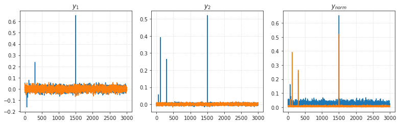
Spectrogram & Periodogram¶
x = np.concatenate([np.expand_dims(x1_noise, 0), np.expand_dims(x2_noise, 0)])
_ = plot_spectrogram(x, fs)
_ = plot_periodogram(x, fs, 'simple')

_ = plot_periodogram(x, fs, 'welch', figsize_y=3)
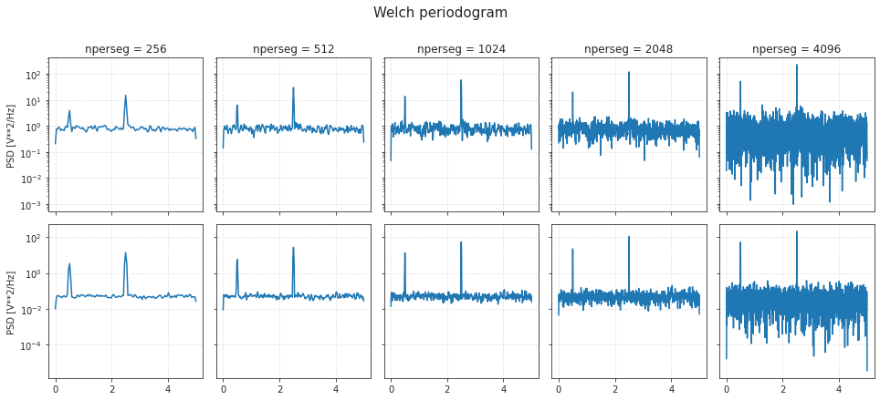
Bandpass¶
Butter response¶
fig, axes = create_figure(2, 1, (6, 4.2), sharex='col')
band = (0.2, 0.4)
axes[0].set(
ylim=(-75, 5),
yticks=[0, -20, -40, -60],
title=f"Frequency Response (band = {band} Hz)",
ylabel='Gain [dB]',
)
axes[1].set(
yticks=[-np.pi, -0.5*np.pi, 0, 0.5*np.pi, np.pi],
yticklabels=[r'$-\pi$', r'$-\pi/2$', '0', r'$\pi/2$', r'$\pi$'],
)
axes[1].set_ylabel('Phase [rad]')
axes[1].set_xlabel('Normalized frequency (1.0 = Nyquist)')
for i, order in enumerate([5, 10, 20]):
sos = sp_sig.butter(
N=order,
Wn=band,
btype='bandpass',
output='sos',
)
w, h = sp_sig.sosfreqz(sos, worN=10000)
db = 20*np.log10(np.maximum(np.abs(h), 1e-5))
axes[0].plot(w / np.pi, db, label=f"order = {order}")
axes[1].plot(w / np.pi, np.angle(h))
axes[0].legend()
axes[0].grid()
axes[1].grid()
plt.show()
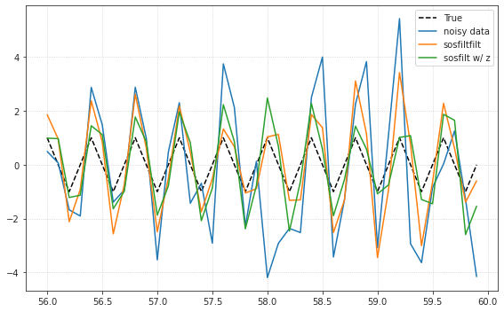
Elliptic response¶
sos = sp_sig.ellip(15, 0.5, 60, (0.2, 0.4), btype='bandpass',
output='sos')
w, h = sp_sig.sosfreqz(sos, worN=1500)
plt.subplot(2, 1, 1)
db = 20*np.log10(np.maximum(np.abs(h), 1e-5))
plt.plot(w/np.pi, db)
plt.ylim(-75, 5)
plt.grid(True)
plt.yticks([0, -20, -40, -60])
plt.ylabel('Gain [dB]')
plt.title('Frequency Response')
plt.subplot(2, 1, 2)
plt.plot(w/np.pi, np.angle(h))
plt.grid(True)
plt.yticks([-np.pi, -0.5*np.pi, 0, 0.5*np.pi, np.pi],
[r'$-\pi$', r'$-\pi/2$', '0', r'$\pi/2$', r'$\pi$'])
plt.ylabel('Phase [rad]')
plt.xlabel('Normalized frequency (1.0 = Nyquist)')
plt.show()
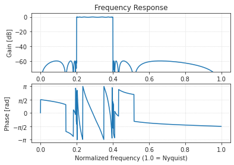
Butter on sim data¶
N = 600
fs = 10
delta_t = 1 / fs
t_idxs = np.arange(N * fs)
time = t_idxs * delta_t
freqs = sp_fft.rfftfreq(len(t_idxs), 1/fs)
fs, delta_t
(10, 0.1)
f1 = 2.5
f2 = 0.5
omega1 = 2 * np.pi * f1
omega2 = 2 * np.pi * f2
a, b = 0.8, 0.4
x1 = a * np.cos(omega1 * time) - b * np.cos(omega2 * time)
x2 = a * np.cos(omega1 * time) + b * np.cos(omega2 * time)
print(x1.var(), x2.var())
x1 = sp_stats.zscore(x1)
x2 = sp_stats.zscore(x2)
rng = get_rng()
x1_noise = x1 + rng.normal(0, 2.0, len(time))
x2_noise = x2 + rng.normal(0, 0.5, len(time))
0.40000000000000674 0.3999999999999933
x = np.concatenate([
np.expand_dims(x1_noise, 0),
np.expand_dims(x2_noise, 0),
])
x.shape
(2, 6000)
order = 5
band = (2, 3)# (0.4, 0.6)# (0.01, 1.0)
x_filt_zi, sos = apply_butter(x, fs, band, order, use_zi=True)
x_filt, sos = apply_butter(x, fs, band, order, use_zi=False)
fig, ax = create_figure(1, 1, (3, 2.2))
w, h = sp_sig.sosfreqz(sos, worN=10000, fs=fs)
db = 20*np.log10(np.maximum(np.abs(h), 1e-5))
ax.plot(2 * w / fs, db)
ax.grid()
plt.show()
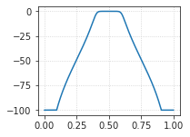
fig, ax = create_figure(1, 1, (8, 5))
intvl = range(560, 600)
ax.plot(time[intvl], np.cos(omega1 * time)[intvl], label='True', color='k', ls='--')
ax.plot(time[intvl], x[0, intvl], label='noisy data')
ax.plot(time[intvl], x_filt[0, intvl], label='sosfiltfilt')
ax.plot(time[intvl], x_filt_zi[0, intvl], label='sosfilt w/ z')
ax.legend()
ax.grid()
plt.show()

sp_stats.pearsonr(x_filt[0], np.cos(omega1 * time))
(0.7202388501776518, 0.0)
sp_stats.pearsonr(x_filt_zi[0], np.cos(omega1 * time))
(0.7037252806356934, 0.0)
sp_stats.pearsonr(x1, x2), sp_stats.pearsonr(x[0], x[1])
((0.5999999999999999, 0.0), (0.23849511294387593, 2.2943326036461635e-78))
sp_stats.pearsonr(x_filt[0], x_filt[1]), sp_stats.pearsonr(x_filt_zi[0], x_filt_zi[1])
((0.6959511924898061, 0.0), (0.6779922237267759, 0.0))
corr = sp_sig.correlate(x_filt[0], np.cos(omega1 * time))
corr_with_z = sp_sig.correlate(x_filt_zi[0], np.cos(omega1 * time))
corr /= np.max(corr)
corr_with_z /= np.max(corr_with_z)
plt.plot(corr[5999 - 20: 5999 + 21], label='sosfiltfilt', color='C1')
plt.plot(corr_with_z[5999 - 20: 5999 + 21], label='sosfilt w/ z', color='C2')
plt.legend()
plt.grid()
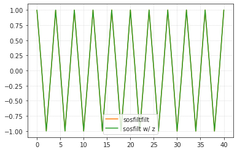
np.max(corr), np.max(corr_with_z)
(1.0, 1.0)
plt.plot(corr, alpha=0.4)
plt.plot(corr_with_z, alpha=0.4)
[<matplotlib.lines.Line2D object at 0x7facfc287dc0>]
intvl = range(100)
sig = x1[intvl]
sig_noise = x1_noise[intvl]
corr = sp_sig.correlate(sig_noise, sig)
lags = sp_sig.correlation_lags(len(sig), len(sig_noise))
corr /= np.max(corr)
fig, (ax_orig, ax_noise, ax_corr) = plt.subplots(3, 1, figsize=(4.8, 4.8))
ax_orig.plot(sig)
ax_orig.set_title('Original signal')
ax_orig.set_xlabel('Sample Number')
ax_noise.plot(sig_noise)
ax_noise.set_title('Signal with noise')
ax_noise.set_xlabel('Sample Number')
ax_corr.plot(lags, corr)
ax_corr.set_title('Cross-correlated signal')
ax_corr.set_xlabel('Lag')
ax_orig.margins(0, 0.1)
ax_noise.margins(0, 0.1)
ax_corr.margins(0, 0.1)
fig.tight_layout()
plt.show()
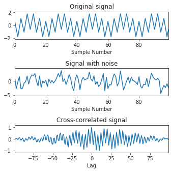
Spectrogram & Periodogram¶
x = np.concatenate([
np.expand_dims(x1_noise, 0),
np.expand_dims(x2_noise, 0),
])
order = 5
band = (0.01, 1.0)
x_filt_zi, sos = apply_butter(x, fs, band, order, use_zi=True)
x_filt, sos = apply_butter(x, fs, band, order, use_zi=False)
x = np.concatenate([np.expand_dims(x1_noise, 0), np.expand_dims(x_filt[0], 0)])
(f, t, sxx), _ = plot_spectrogram(x, fs)
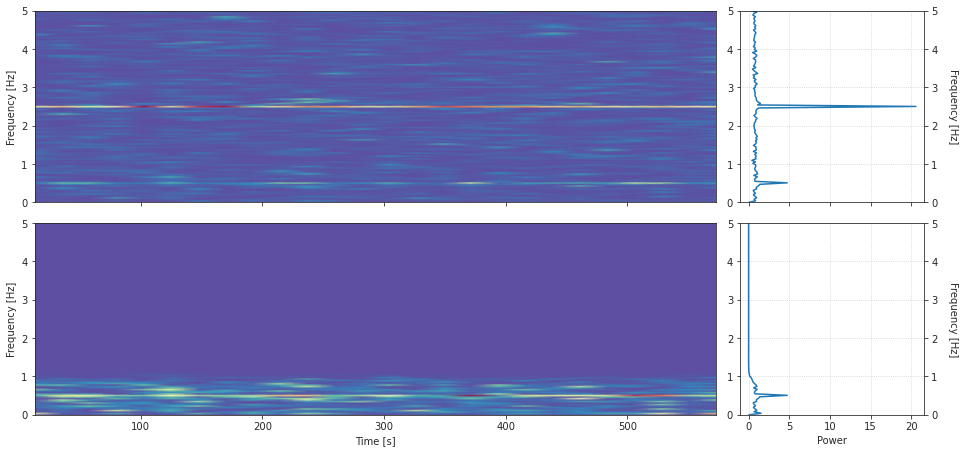
f.shape, t.shape, sxx.shape
((2, 129), (2, 26), (2, 129, 26))
x = np.concatenate([np.expand_dims(x_filt[0], 0), np.expand_dims(x1_noise, 0)])
(f, pxx), _ = plot_periodogram(x, fs, kind='welch')

f[256].shape, pxx[256].shape
((2, 129), (2, 129))
for nperseg in pxx:
peak_freqs = [_f[i] for _f, i in zip(f[nperseg], np.argmax(pxx[nperseg], axis=1))]
print(f"nperseg = {nperseg},\tpeak freqs: {peak_freqs}")
nperseg = 256, peak freqs: [0.5078125, 2.5]
nperseg = 512, peak freqs: [0.5078125, 2.5]
nperseg = 1024, peak freqs: [0.498046875, 2.5]
nperseg = 2048, peak freqs: [0.498046875, 2.5]
nperseg = 4096, peak freqs: [0.50048828125, 2.5]
(f, pxx), _ = plot_periodogram(x, fs, kind='simple')
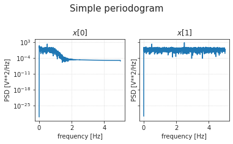
f.shape, pxx.shape
((2, 3001), (2, 3001))
peak_freqs = [_f[i] for _f, i in zip(f, np.argmax(pxx, axis=1))]
peak_freqs
[0.5, 2.5]
Coherence¶
f, cxy = sp_sig.coherence(
x=x1_noise,
y=x2_noise,
nperseg=256,
fs=fs,
)
plt.semilogy(f, cxy)
plt.xlabel('frequency [Hz]')
plt.ylabel('Coherence')
plt.grid()
plt.show()
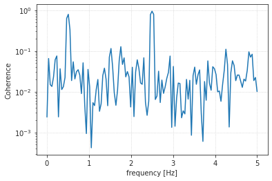
sns.histplot(cxy)
<AxesSubplot:ylabel='Count'>
idxs = np.argsort(cxy)[::-1][:10]
idxs
array([ 64, 13, 65, 63, 12, 14, 45, 39, 109, 123])
cxy[idxs]
array([0.93513394, 0.78576451, 0.78408372, 0.77134926, 0.62511697, 0.33162038, 0.12648448, 0.11405977, 0.10954069, 0.09434894])
f[idxs]
array([2.5 , 0.5078125, 2.5390625, 2.4609375, 0.46875 , 0.546875 , 1.7578125, 1.5234375, 4.2578125, 4.8046875])